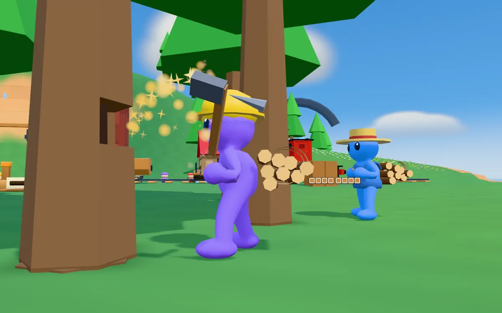
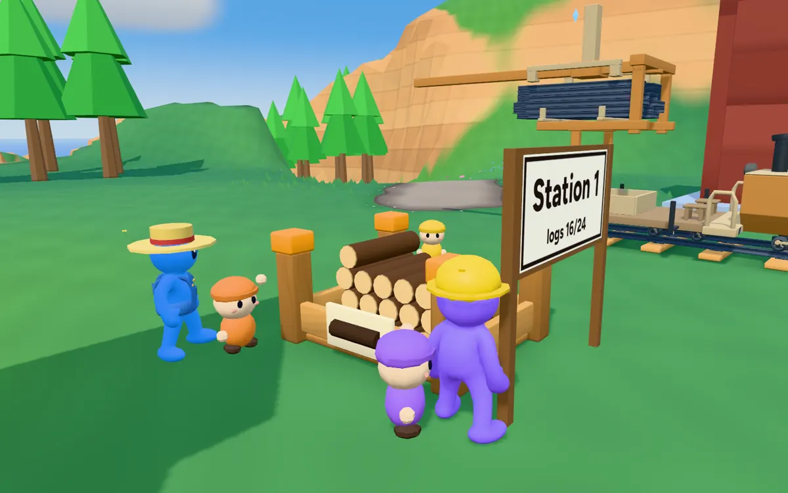
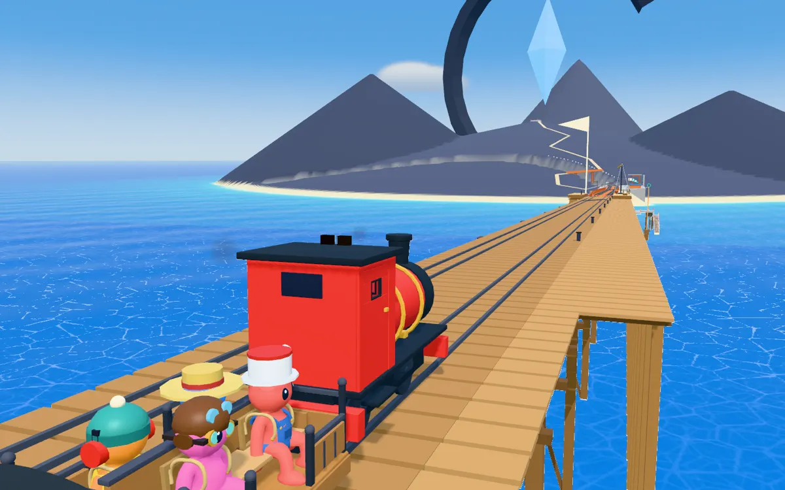
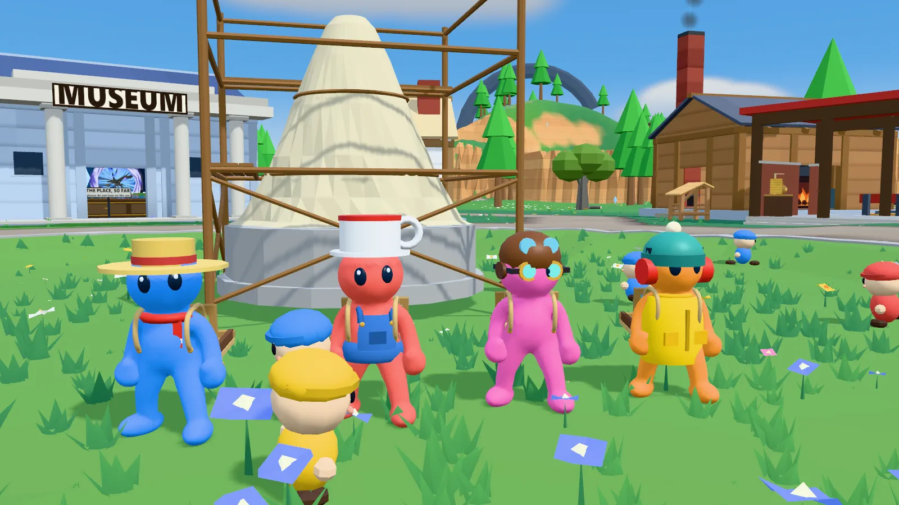
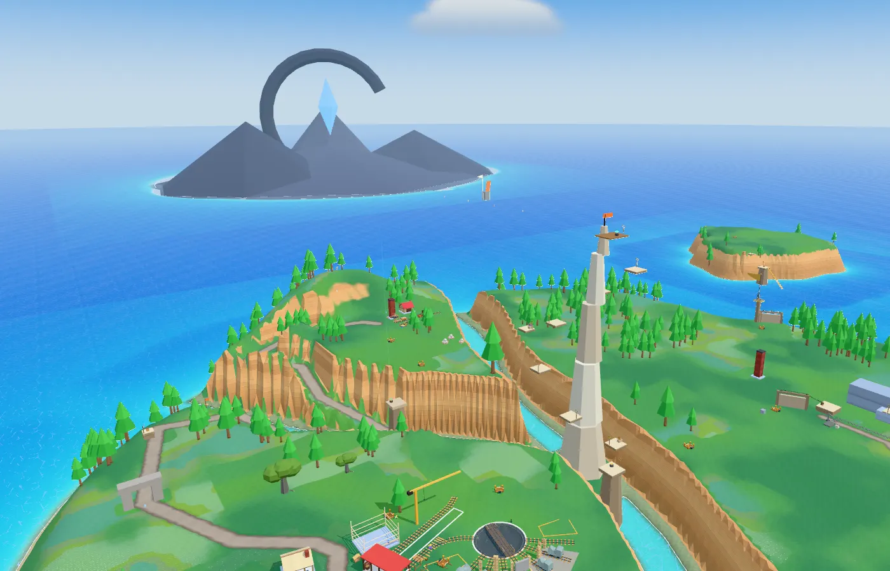
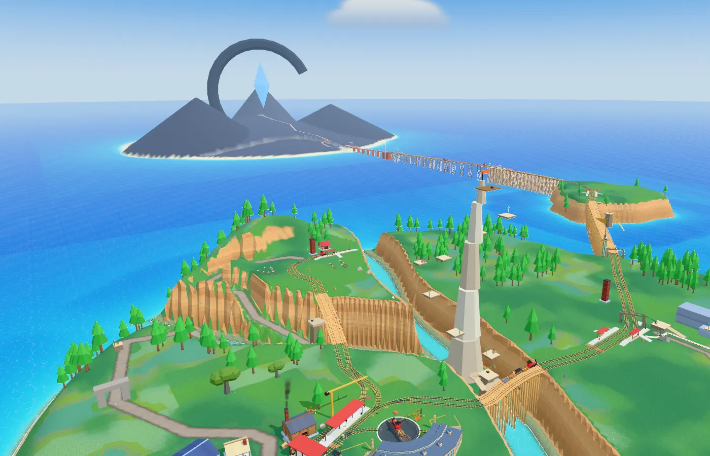
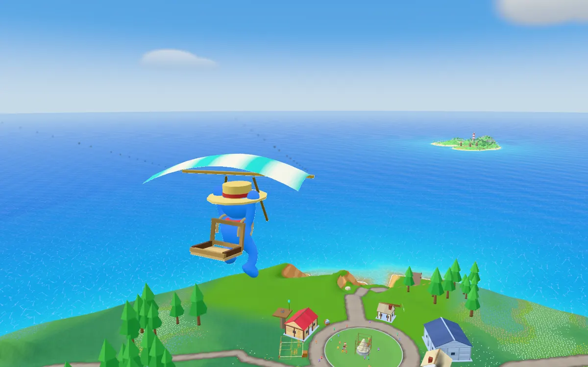
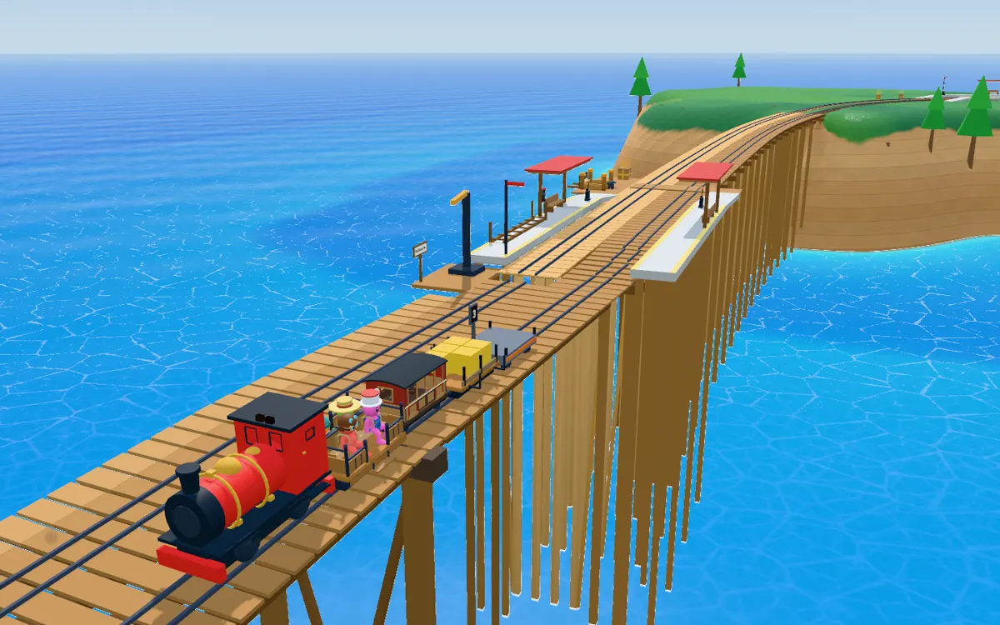
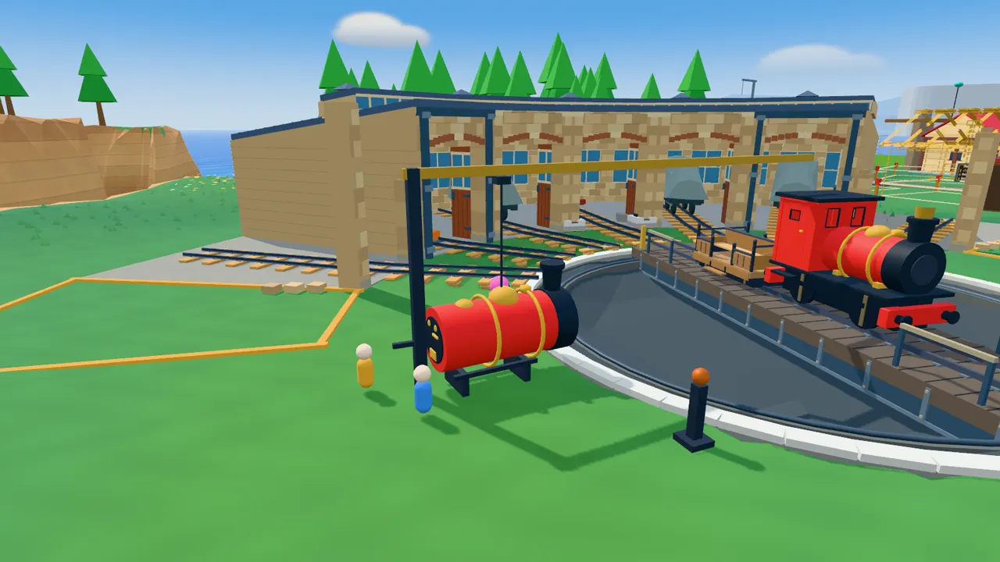

How it plays
-

1Chop
Take an axe to the nearest tree and load the logs on your back.
-

2Build
Drop them at the end of the line. Fill the order and the machine lays the next stretch of track.
-

3Ride
Every stretch you finish is track you can ride, a little farther each time.

Better with friends
Send a link and your friends land in the same world. Split up to chop and haul, or all pile onto one train. It works alone too, just slower.
There are hats to find. Somebody always ends up in the teacup.
Watch the island change
The world is shared, and what you build stays built. Come back tomorrow and the line is where you left it.


Along the way
-

Glide home
Climb the tallest rock on the island, then jump off it with a glider.
-

Cross open water
Where the land runs out, you build the bridge out to sea one frame at a time.
-

Grow the town
Freight and fares pay into one wallet you all share. Spend it on houses and the town fills up.
-

Upgrade the engines
Bring steel home by rail and fit a bigger boiler at the engine shed.
Good to know
- Players
- One to four. Friends join from a link.
- Price
- Free.
- Plays on
- A recent browser on a computer, phone or tablet. Keyboard and mouse, touch or a gamepad.
- Status
- Still being built. Changes land most days, and a big update can reset the world. Watch the patch videos.